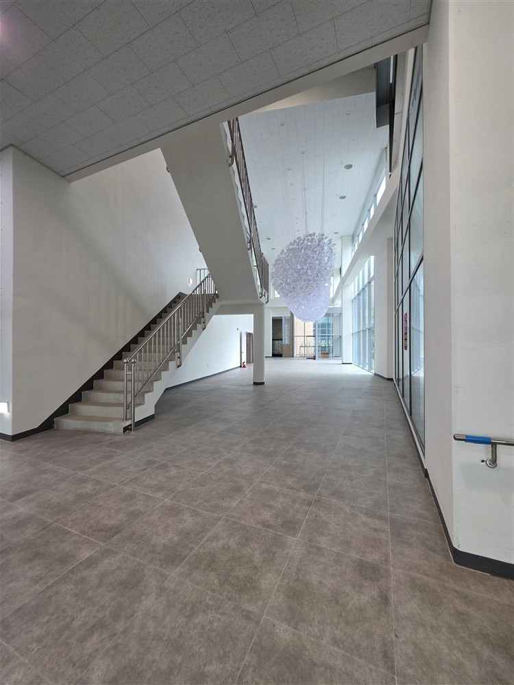
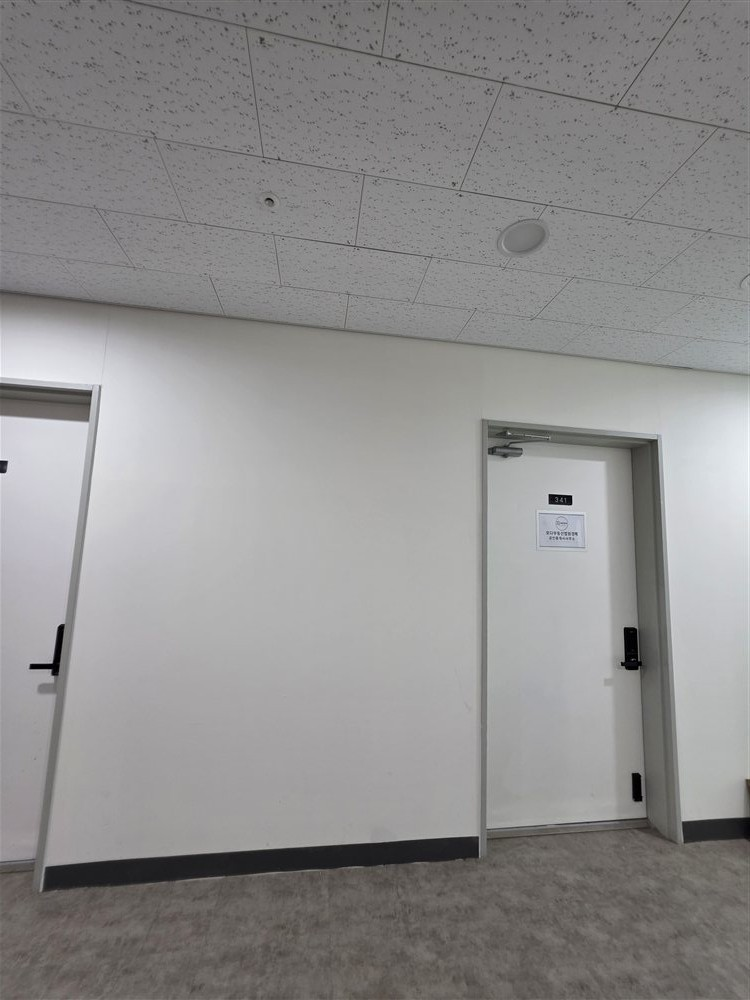

법원 정식 등록 매수신청대리인 대표 공인중개사 박지은이
꼼꼼한 권리분석과 데이터 기반 입찰가 산정으로 안전한 경매 투자를 함께합니다.
물건 분석부터 법원 입찰, 낙찰 후 마무리까지 복잡한 경매 과정을
체계적이고 투명한 시스템으로 안전하게 이끌어 드립니다.
복잡한 권리, 쉽고 정확하게 분석하여 안전한 물건 선별부터 낙찰 후 절차까지 체계적으로 컨설팅합니다.
철저한 시세 조사와 현장 임장 데이터를 바탕으로 감에 의존하지 않는 현실적이고 합리적인 입찰가를 제안합니다.
필요에 맞게 함께, 또는 대리로 법원 입찰 기일 출석부터 입찰 절차 전반을 안전하게 진행합니다.
고객 한 분 한 분의 소중한 자산을 지키는 정직하고 원칙적인 기준을 약속합니다.
오직 한 분만을 위한 깊이 있는 맞춤형 상담을 운영합니다. 여러 의뢰인을 동시에 응대하지 않고, 고객 한 분의 상황과 목표에 온전히 집중합니다.
정식 등록된 전문가가 법적 책임감을 가지고 투명하게 대리합니다. 공인중개사법 및 대법원 규칙을 철저히 준수합니다.
서류 분석은 물론 직접 현장을 확인하는 철저한 리스크 관리를 실천합니다. 책상 위 서류만으로는 보이지 않는 실체를 직접 확인합니다.
신청부터 입찰, 결과 처리까지 대리입찰이 어떤 순서로 진행되는지 체계적으로 정리했습니다.
각 단계마다 문자로 진행 상황을 투명하게 안내드리므로, 법원에 직접 가지 않고서도 전 과정을 실시간으로 확인하실 수 있습니다.
홈페이지 신청 폼에서 사건번호·매각기일·입찰자 정보를 접수합니다. 개인 명의와 법인 명의 모두 간편하게 신청하실 수 있습니다.
온라인 신청 폼 바로가기접수 즉시 해당 매각기일의 법원 일정을 확인한 뒤 진행 가능 여부를 문자로 빠르게 안내해 드립니다.
진행 가능 안내를 받으신 후 기본 수수료 99,000원을 입금해 주세요. (수원지법 본원·안산지원·안양지원, 인천지법 본원·부천지원 기준)
계약서 확인·서명 링크를 카카오 알림톡으로 보내드립니다. 스마트폰 화면에서 본인이 직접 서명하시면 계약서·위임장이 생성되며 의뢰가 최종 확정됩니다.
입찰 전일 21시까지 입찰보증금(통상 해당 회차 최저매각가격의 10%)을 안전하게 준비·입금합니다.
입찰 당일 아침, 대리인이 법정 출발 전 의뢰인 본인과 전화 통화로 최종 입찰 금액을 '0'의 개수까지 복창 확인합니다.
매수신청대리 정식 등록 공인중개사가 법원에 직접 출석하여 당일 변경·취하 여부를 확인하고, 기일입찰표와 보증금을 정식 접수한 뒤 개찰을 지켜봅니다.
법원 입찰기일은 평일 오전에 열립니다. 전문 등록 공인중개사가 법원에 직접 출석하여 안전하게 대행합니다.
법원 경매는 절차 하나를 놓치면 보증금을 잃거나 예상치 못한 권리를 떠안게 됩니다.
매수신청대리 전문가가 입찰 준비부터 잔금 납부와 명도까지 가장 많이 받는 핵심 질문을 정리했습니다.
법원명과 사건번호, 입찰자 정보만 입력하시면 법정 표준 규격의 기일입찰표와 위임장이 즉시 완성됩니다.
서류 준비 방식은 의뢰인의 편의에 따라 세 가지 방식 중 하나를 선택하실 수 있습니다.
네, 100% 가능합니다. 두 확인서 모두 「본인서명사실 확인 등에 관한 법률」에 따라 인감증명서 제출을 법적으로 갈음하므로, 인감도장 없이 본인 서명만으로 안전하게 진행할 수 있습니다.
[법원명(지원명 포함) · 사건번호 · 물건번호 대리입찰](예: 수원지방법원 안산지원 2025타경12345(1) 대리입찰), 제출기관은 관할 법원 본원, 위임받을 사람은 '박지은'으로 지정해 주시면 됩니다. 발급증은 이메일(hi.modahome@gmail.com)로 전송해 주셔도 됩니다.
[해당 법원 사건번호 대리입찰], 위임받을 사람을 '박지은'으로 기재하신 후 확인서 원본을 위임장과 함께 빠른등기로 보내주시면 됩니다.
서류 일체(위임장, 기일입찰표, 인감증명서 또는 본인서명확인서)는 반드시 입찰 전일까지 모다부동산법원경매 사무소에 도착해야 합니다.
입찰을 정상 진행한 경우: 제출된 위임장, 기일입찰표, 인감증명서 등은 법원 집행관실에 공식 서류철로 편철되어 법원에 영구 보관되므로, 낙찰이나 패찰 여부와 무관하게 법원에서 반환되지 않습니다.
사건 변경·취하 또는 의뢰 취소 등으로 입찰이 진행되지 않은 경우: 의뢰인의 소중한 개인정보 보호를 위해 보내주신 서류 일체는 즉시 안전 파기하며, 파기 사실을 사진 또는 문자로 투명하게 확인시켜 드립니다.
수도권 주요 법원(수원지방법원 본원·안산지원·안양지원 및 인천지방법원 본원·부천지원 등)은 단순 대리입찰 기준 99,000원입니다.
대리입찰 수수료는 낙찰·패찰 결과와 관계없이 동일하게 적용됩니다. 대리인이 정해진 기일에 법정에 정식 출석하여 입찰표를 접수하고 개찰 결과를 확인하는 전문 대리 업무가 이미 성실히 완수되었기 때문입니다.
기일입찰의 입찰보증금은 '내가 적는 입찰가격'이 아니라, 법원이 공고한 '해당 회차 최저매각가격의 10%'입니다. (1원이라도 부족하면 입찰 자체가 즉시 무효 처리됩니다.)
보증금 준비 방법: 은행에서 '법원 발행 자기앞수표 1장'으로 정액 발행하여 준비하시는 것이 실무상 가장 안전하고 확실합니다. 사무실 방문 또는 등기우편 동봉으로 전달하실 수 있습니다.
절대 불가능합니다. 한 대리인이 같은 사건의 같은 물건(물건번호)에 대해 두 사람 이상의 입찰을 대리하면 법률(대법원 재판예규 제31조 제7호)에 따라 그 대리인이 대리한 입찰은 전부 무효가 됩니다.
법원 경매에서는 입찰표의 금액란을 수정(가필, 삭선, 덧쓰기, 수정테이프 사용 등)하면 입찰 자체가 무효 처리됩니다.
아닙니다. 경매는 매각기일 당일 낙찰(최고가매수신고인 결정) 후 정해진 법적 절차를 거쳐 소유권을 취득합니다.
해당 부동산은 재매각 절차에 부쳐집니다. 따라서 입찰 전 반드시 경락잔금대출 가능 여부, LTV·DSR 한도, 규제지역 및 보유 주택 수에 따른 대출 규제를 전문가와 함께 꼼꼼하게 사전 점검해야 합니다.
경매는 공매와 달리 낙찰자를 강력히 보호하는 '부동산 인도명령' 제도가 있습니다.
* 단, 대항력 있는 임차인의 경우 인도명령 대상이 아니므로 사전에 입찰 전 권리분석을 통해 완벽히 점검해야 합니다.
접수 후 담당자가 사건을 신속히 확인하여 계약서 서명 링크를 알림톡(문자)으로 보내드립니다.
[해당 법원 사건번호 대리입찰], 위임받을 사람을 '박지은'으로 지정해 주시고, 발급증은 이메일(hi.modahome@gmail.com)로 보내주셔도 됩니다.
생생한 법원경매 임장기와 실전 경매 노하우를 공유합니다.
현장의 생생한 이야기와 알기 쉬운 권리분석 팁을 지금 바로 만나보세요.
좋은 기회, 함께 찾겠습니다.
모다부동산법원경매는 깊이 있는 상담을 위해 100% 사전 예약제로 운영됩니다.
편안한 시간대에 전화 또는 문자를 남겨주시면 정성을 다해 안내해 드리겠습니다.
경기도 시흥시 시청로 25, 3층 341호
서해선 시흥시청역 인근 (시흥시청 정문 맞은편 상가)
평일 09:30 ~ 18:00 (100% 사전 예약제 운영)
hi.modahome@gmail.com

3층 로비 및 홀
341호 사무소 입구